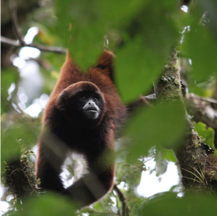

El Mono Choro de Cola Amarilla (*Oreonax flavicauda*)
Es una especie endémica de los bosques nublados de las regiones de Amazonas y San Martín en el Perú. Actualmente enfrenta una situación crítica debido a la deforestación y la caza ilegal.

¿A dónde va el dinero de tus compras?
En Kori Store operamos bajo un modelo de impacto social y ambiental transparente. Cada sol recaudado se distribuye de la siguiente manera:
🌳 30% - Reforestación Activa
Financiamos la siembra de árboles nativos para restaurar el corredor biológico de los bosques nublados donde habita la especie.
🤝 40% - Comunidades Locales
Invertimos en talleres de capacitación y comercio justo con guardianes y artesanos locales que protegen el área de conservación.
🛡️ 30% - Monitoreo y Protección
Adquirimos equipos de vigilancia, cámaras trampa y suministros para patrullajes en contra de la tala y caza ilegal.